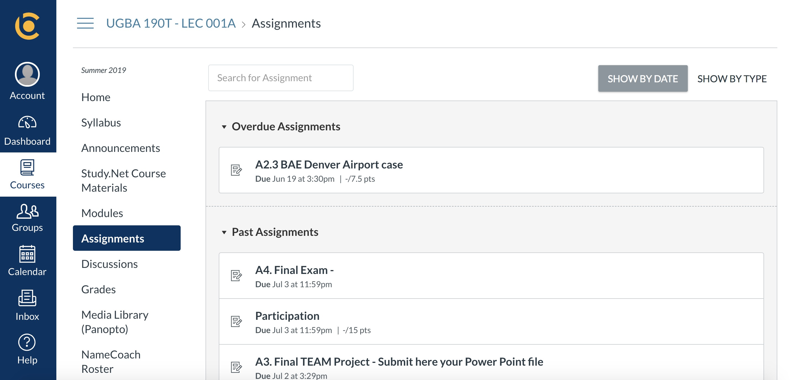

{% load static %}

<!DOCTYPE html>
<html>
<head>
    <meta http-equiv="Content-Type" content="text/html; charset=utf-8">
    <title>P4 Drawing</title>

    <link rel="stylesheet" type="text/css" href="{% static 'draw/vendor/bootstrap/css/bootstrap.min.css' %}">
    <script type="text/javascript" src="{% static 'draw/vendor/jquery/jquery-3.3.1.min.js' %}"></script>
    <script type="text/javascript" src="{% static 'draw/vendor/paper/paper-full.min.js' %}"></script>

    <style type="text/css">
   
html,
body {
    margin: 0;
    overflow: hidden;
    height: 100%;
}

/* Scale canvas with resize attribute to full size */
canvas[resize] {
    width: 100%;
    height: 100%;
}

    </style>

</head>
<body>
    <!-- You may change the dimensions of this canvas -->
    <canvas id="myCanvas" resize></canvas>
    
</body>
<script>
  

  
    var colors = ['red','black', 'blue', 'yellow', 'green', 'orange', 'purple', 'pink'];
    var colorindex = Math.floor(Math.random()*colors.length);
    // identifying each user
    var user = Math.floor(Math.random() * 100) + 1;
    // collecting the paths for one user 
    var userpaths = [];
    // collecting the paths for all users using id - paths pairs
    var users = {user: userpaths};
    
    // setting up the canvas and one paper tool
    var canvas = document.getElementById('myCanvas');
    paper.setup(canvas);
    var tool = new paper.Tool();
  
    var raster = new paper.Raster({
      source: "../../static/bcourses.png", //notice here
      position: paper.view.center
    });
    raster.scale(0.35);

    // getting the URL (you may want to use for Exercise 3)
    var url = window.location.href;
  
    const params = new URLSearchParams(window.location.search);  
    const size = params.get("size");  
    const apply = params.get("tool");
    console.log(apply);
    console.log(size);
  
    var socket = new WebSocket(
        'wss://project3-emilyxiao231877.codeanyapp.com/ws/draw');
      
    //citation: https://www.raymondcamden.com/2017/04/25/using-device-motion-on-the-web
    
    if (size == "large") {
      socket.onmessage = function(received) {
          let d = JSON.parse(received.data);
          let c = colors[d['color']];
          let w = d['width'];
          let p = new paper.Point(d['x'], d['y']);

          if (d['user'] in users) {
            if(d['new'] == 0){
            users[d['user']][users[d['user']].length - 1].add(p);
            }else{
            newpath = new paper.Path();
            newpath.add(p);
            newpath.strokeColor = c;
            newpath.strokeWidth = w;
            newpath.opacity = d['opacity'];
            users[d['user']].push(newpath);
            }
          } else {
            // assign a new userpath to the new user
            users[d['user']]= [];
            newpath = new paper.Path();
            newpath.add(p);
            newpath.strokeColor = c;
            newpath.strokeWidth = w;
            newpath.opacity = d['opacity'];
            users[d['user']].push(newpath);
           
          }     

      }
    } else if (size == "small") {
      var brushsize;
      var opacity;
      if (apply == "highlighter") {
        //highlighter tool
        brushsize = 10;
        opacity = 0.2;
        
      } else if (apply == "pen") {
        //pen tool
        brushsize = 1;
        opacity = 1;
        
      }
      var path;
      tool.onMouseDown = function(event) {
        path = new paper.Path();
        path.strokeColor = colors[colorindex];
        path.strokeWidth = brushsize;
        path.opacity = opacity;
        userpaths.push(path);
        users[user] = userpaths;
       
        let message = {
          x: event.point.x,
          y: event.point.y,
          user: user,
          color: colorindex,
          width: brushsize,
          opacity: opacity,
          new: 1
        };
        setTimeout(()=>{
      // send message to the server
      socket.send(JSON.stringify(message));
    }, 500);
      }
  
      tool.onMouseDrag = function(event) {
          // Create a new path every time the mouse is clicked
        path.add(event.point);
        userpaths[userpaths.length - 1] = path;
        users[user] = userpaths;
        
         let message = {
          x: event.point.x,
          y: event.point.y,
          user: user,
          color: colorindex,
          width: brushsize,
          opacity: opacity,
          new: 0
        };
        setTimeout(()=>{
      // send message to the server
      socket.send(JSON.stringify(message));
    }, 500);
//           var data = {
//             "id": id,
//             "x": event.point.x,
//             "y": event.point.y,
//             "color": colorindex
//           }

//           setTimeout(function() { 
//             socket.send(JSON.stringify(data));
//           }, 50);

      }
     
      tool.onMouseUp = function(event) {
        userpaths.push(path);
        console.log(userpaths);
      

      }
      
      
      
    }
    
    


</script>
</html>
